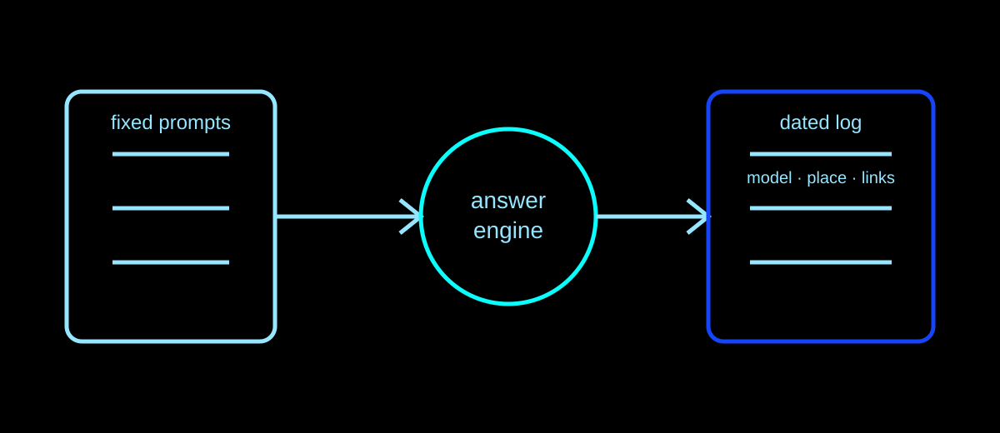

Measurement
Open-Source AI Search Visibility Tools: What to Measure First
AI-search visibility tools can help a site owner observe crawler access, page readiness, prompts, mentions, and citations. They are measurement aids. They do not prove that a tool caused a model to cite a page.
Published

Quick definition
Open-source AI-search visibility tools are projects that inspect or track a site’s presence in AI-mediated search. They may check robots rules, sitemaps, schema, readable content, model answers, brand mentions, or citations.
Measure in the right order
First confirm that the page exists, returns an honest HTTP status, is linked internally, has a canonical URL, and appears in the sitemap. Then inspect the page itself: does the first screen answer a real question, cite evidence, identify an author, and distinguish fact from interpretation?
Only after those checks should you establish an answer-engine baseline. Use a fixed set of prompts, record the exact engine and date, and log the full answer plus cited URLs. Repeat the same test periodically. Look for material patterns, not one flattering mention.
What not to claim
Do not say that llms.txt, schema, a crawler allowlist, or a scoring tool guarantees AI citations. Those inputs may improve organisation or access, but answer engines make their own retrieval and ranking decisions. The honest result may be “no observable change yet.”
Limits
Models and search products change, answers vary by wording and location, and third-party trackers sample a limited view. Use their data to decide what to investigate—not as a substitute for server logs, Search Console, or source-level review.